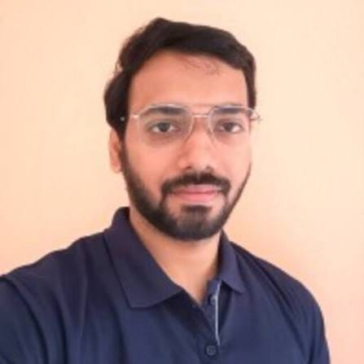
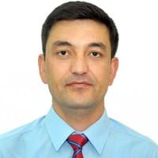

Academic Legacy & Mentorship
Throughout her distinguished career, Prof. Nandita Srivastava has mentored doctoral students, postdoctoral fellows, and young researchers from India and abroad. Many of her former students and collaborators now serve at leading universities and research institutions worldwide, reflecting her lasting impact on the global solar physics and space weather community.
Ph.D. Supervision

Dr. Anand D. Joshi
Ph.D. Student (2006–2010)
Morphology and Dynamics of Solar Prominences
Presently at the National Astronomical Observatory of Japan (NAOJ), Mitaka, Japan.

Dr. Wageesh Mishra
Ph.D. Student (2011–2015)
Evolution and Consequences of Coronal Mass Ejections in the Heliosphere
Assistant Professor, Indian Institute of Astrophysics, Bengaluru.
Dr. Ranadeep Sarkar
Ph.D. Student (2016–2020)
Solar Origin of Space Weather
University of Helsinki, Finland.

Dr. Suvadip Sinha
Ph.D. Awarded (2023)
Investigating Solar Drivers of Space Weather
Jointly supervised with Dr. Dibyendu Nandy (IISER Kolkata).

Dr. Zavkiddin Mirtoshev
Ph.D. Awarded (2022)
Coronal Mass Ejections: Their Solar Cycle Variation and Impact on Space Weather
Samarkand State University, Uzbekistan (Co-supervisor).

Dr. Sandeep Kumar
Ph.D. Awarded (2025)
Heliospheric Propagation of Solar Wind and Coronal Mass Ejections
Awarded by IIT Gandhinagar.
Postdoctoral Fellows
Dr. Anand D. Joshi
Postdoctoral Fellow
December 2011 – November 2012
Dr. Wageesh Mishra
Postdoctoral Fellow
March – May 2015
Presently faculty at the Indian Institute of Astrophysics.

Dr. G. Sindhuja
Postdoctoral Fellow
July 2016 – October 2017
Presently at NASA Goddard Space Flight Center, USA.

Dr. S. S. Rao
Postdoctoral Fellow
November 2021 – October 2024
Presently faculty at Patna University.

Dr. Debesh Bhattacharjee
Postdoctoral Fellow
October 2025 – Present
Postdoctoral Fellow, Udaipur Solar Observatory, PRL.
Dr. Sandeep Kumar
Postdoctoral Fellow
September 2025 – Present
Postdoctoral Fellow, Udaipur Solar Observatory, PRL.
International Students & Visiting Fellows
Zavkiddin Mirtoshev
RTF-DCS Fellow (2017)
Samarkand State University, Uzbekistan.

Aditya Jaypal
Summer Research Student (2018)
University of Waterloo, Canada.

Diyorbek Pulatov
COSPAR Visiting Fellow (2025)
Samarkand State University, Uzbekistan.